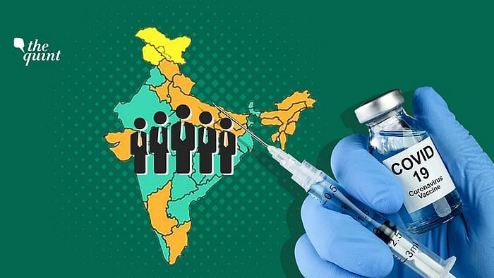

The world is in the midst of a COVID-19 pandemic. As WHO and partners work together on the response
-- tracking the pandemic, advising on critical interventions, distributing vital medical supplies
to those in need--- they are racing to develop and deploy safe and effective vaccines. Vaccines save
millions of lives each year. Vaccines work by training and preparing the body’s natural defences – the immune system – to recognize and fight off the viruses and bacteria they target. After vaccination,
if the body is later exposed to those disease-causing germs, the body is immediately ready to destroy them,
preventing illness.As of 18 February 2021, at least seven different vaccines across three platforms have
been rolled out in countries. Vulnerable populations in all countries are the highest priority for vaccina
tion.At the same time, more than 200 additional vaccine candidates are in development, of which more than
60 are in clinical development. COVAX is part of the ACT Accelerator, which WHO launched with partners in 2020.
COVAX, the vaccines pillar of ACT Accelerator, convened by CEPI, Gavi and WHO, aims to end the acute phase of
the COVID-19 pandemic by:
*speeding up the development of safe and effective vaccines against COVID-19;
*supporting the building of manufacturing capabilities; and
*working with governments and manufacturers to ensure fair and equitable allocation of the vaccines for all
countries – the only global initiative to do so.
COVID-19 Vaccine Registration

The vaccination registrations are expected to increase sharply
in view of India’s ambitious move to expand the inoculation
programme amidst the second wave of the pandemic.However, those
aged 45 years and above will continue to enjoy the on-site regis
tration facility.